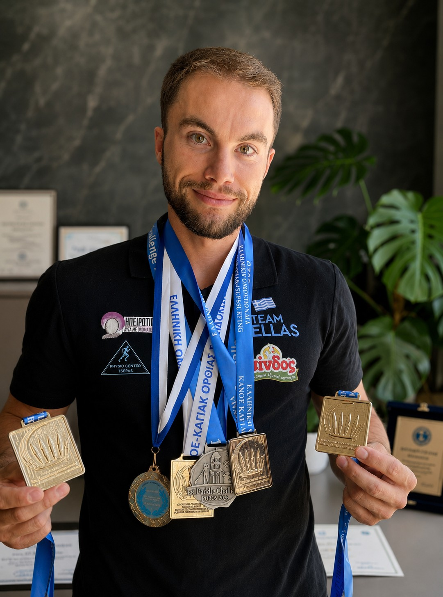

Παναγιώτης Αντωνίου — Α' Προπονητής των τμημάτων Κανόε-Καγιάκ και Όρθιας Σανιδοκωπηλασίας / SUP.

12χρόνια αθλητικής εμπειρίας
4χρόνια προπονητικής εμπειρίας
15διεθνείς διοργανώσεις
Α' Προπονητής
Παναγιώτης Αντωνίου
Α' Προπονητής των τμημάτων Κανόε-Καγιάκ και SUP, με 12 χρόνια αθλητικής εμπειρίας στο Κανόε-Καγιάκ και 4 χρόνια προπονητικής εμπειρίας.
Πρωταθλητής Ελλάδας 2018–2026Εθνική Ομάδα 2019–σήμεραCanoe Kayak SprintΌρθια Σανιδοκωπηλασία / SUP
2018–2026Πρωταθλητής Ελλάδας
2019–σήμεραΕθνική Ομάδα
15Διεθνείς διοργανώσεις
26Συμμετοχές σε Παγκόσμια & Πανευρωπαϊκά Πρωταθλήματα
Αθλητική πορεία
Έχει συμμετάσχει σε 15 διεθνείς διοργανώσεις, συμπεριλαμβανομένων παγκόσμιων και πανευρωπαϊκών πρωταθλημάτων. Έχει εκπροσωπήσει την Ελλάδα στις προκρίσεις για τους Ολυμπιακούς Αγώνες Τόκιο 2020 και Παρίσι 2024, καθώς και στους Μεσογειακούς Αγώνες 2026 στην Ιταλία.
Εκπαίδευση
Πτυχιούχος με Άριστα, BSc Hons Sports Science & Coaching, University of Derby, Ηνωμένο Βασίλειο (First Class Honours, 85/100), με ειδικότητα Κανόε–Καγιάκ.
Απόφοιτος σχολής προπονητών της ΓΓΑ στα αθλήματα Κανόε Καγιάκ Ήρεμων & Άγριων Νερών και Όρθιας Σανιδοκωπηλασίας (SUP).
Κάτοχος Άδειας Ασκήσεως Επαγγέλματος από τη ΓΓΑ Α' Κατηγορίας.
Πιστοποιήσεις & επιμόρφωση
Υγεία & Αντι-Ντόπινγκ — WADA
Το Μέλλον του Αθλητισμού στην Ελλάδα — Metropolitan College
Συμπληρώματα Διατροφής και Αναβολικά — Πανεπιστημιακό Νοσοκομείο Ιωαννίνων
Συμπληρώματα Διατροφής, Για Ποιους και Γιατί — Education Festival 2023
Ο Ρόλος της Σχέσης Αθλητή–Προπονητή — Education Festival 2023
Διαχείριση και Αποκατάσταση Τραυματισμών Ώμου — PrimePhysio
Σύνδρομο Υπερπροπόνησης στον Πρωταθλητισμό — Open University
Ψυχολογικές Πτυχές Τραυματισμών Αθλητών — Open University
Κοινωνικές Δεξιότητες στον Τομέα της Προπονητικής — Education Festival 2023
3ου Επιπέδου Δίπλωμα στην Παιδαγωγική Φροντίδα — Academy Adams-Johns
Πρακτικές Ασφαλείας & Πρόληψης στην Ελεύθερη Κατάδυση — Divers Alert Network Europe & Πανεπιστήμιο Θεσσαλίας
Διασώστης Πρώτων Βοηθειών (ΚΑΡΠΑ & Χρήση Εξωτερικού Απινιδωτή) — International Rescue Training